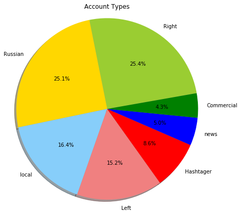
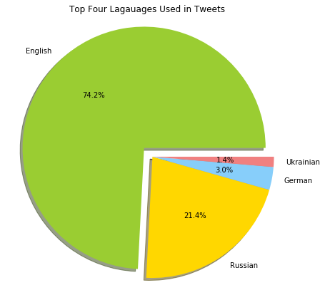
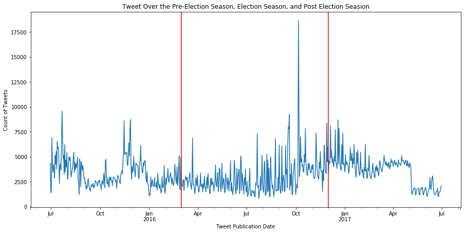
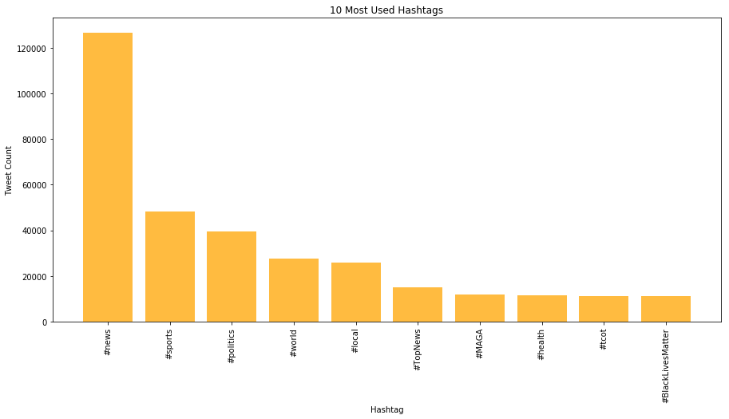

Russion Troll Tweet Analysis

Fig.1 - Russion Troll Account Types

Fig.2 - Breakdown of accounts by language

Fig.3 - Tweet counts before, during, and after 2016 election

Fig.4 - Top hashtag content in tweets